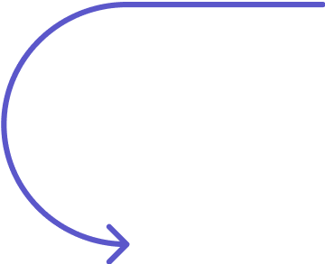
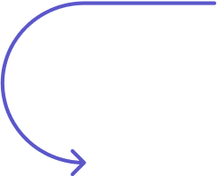
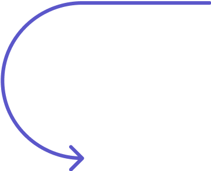
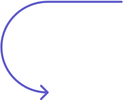
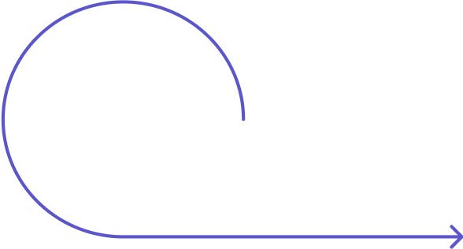
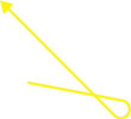
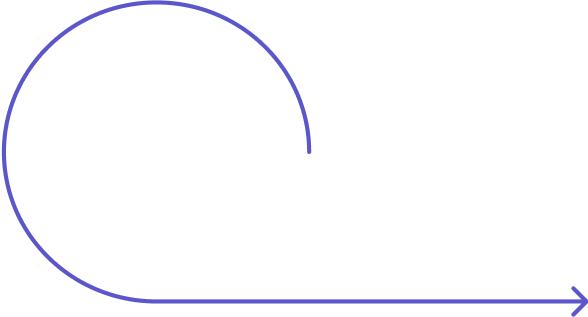
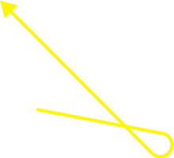

Evaluation
1a. Welcome!
 



 





We believe that software can serve the public better! This document is a guide to help you, a public sector employee, source the best possible software. It walks through government contracting step-by-step, aligning legitimate public procurement with the cutting-edge best practices of development. It is not an inflexible set of mandatory steps. Rather, it introduces fundamental concepts at each stage of a procurement, provides guidelines and best practices, and offers links to additional resources if you would like to read more.
Who should use this process code for software procurement?
Several people from different departments should be involved in a software design and procurement
process—from legal counsel to IT to the end users themselves—each bringing their own expertise and
perspective. This guide is intended for all of them, but each will have a more prominent role in
certain phases.
There will also be a single person who follows the process from beginning to end:
the ‘product owner.’ Product owners are expert generalists who deeply understand end users and their
needs, work across different departments, ask good questions, and carry the project from start to
finish. The product owner should read this whole guide, and be comfortable with each step of the
process, while specialists can read the introduction and basic principles, then focus on the
particular step that is most relevant to them.
How to use this process code
You should read through this process code and become familiar with its content, now—before you begin
working on a specific software project. Successful procurement is built on a solid foundation of staff
capacity, collaboration, and shared understanding. It’s important to lay that foundation before you
have the time pressure of a specific project.
This process code will walk you through four
primary phases:
1. Orientation
2. Planning
3. Assessment
4. Implementation
Within each phase there are number of steps. Each step contains key challenges, knowledge content, suggested actions, and takeaways, as well as references and additional reading. In some cases, the suggested actions culminate in you choosing to progress down one path or another.


Use +
Maintenance
Maintenance
Vendor interactions
Modularization
RFP writing
Strategic analysis
Discovery research
Capacity-building
Bid evaluation
Assessment
Compliance + Contracting
Compliance + Contracting
Orientation
Capacity-building + Research
Capacity-building + Research
Planning
Documentation + Resourcing
Documentation + Resourcing
Contracting
Development +
deployment
deployment
Integration
Market research
Selection
Project resourcing
Issue + Publicize RFP
Existing system map
Module & feature list
Market analysis
Benchmarks
Lifetime costs
Alternatives
Future issues
Problem statement
KPI’s / Objectives
Project kickoff
Product owner
Submit bids
Licensing
Contract
Process defs
All features built
Documentation
Maintenance plan


The process code ends with an implementation phase that emphasizes ongoing collaboration. That is to
say, a software project is never really “finished.” In the best case, you become an active participant
in the use, maintenance and improvement of your software, for the benefit of all public sector
organizations.
Bookmark this page, return to it over time, and share it with your colleagues.
And remember that the fundamental purpose of the process code is to anchor a community of practice.
Reach out to the Foundation for Public Code with any questions, and to learn about joining a group of
peers.
Strategic paths
At the end of the Orientation phase, you will have a clear sense of where your software will come
from, based on your needs, your development capacity, and the maturity of the market. At that point,
you will choose a path—purchasing existing software, customizing open source software, or contracting
a vendor who can build custom software for you—and write an RFP (Request for Proposal) accordingly.
If
you decide to build software in-house, you won’t write an RFP. Instead, your team will run an agile
development process. Although the details of agile development are out of scope for this process code,
we provide some useful resources and references. And the Orientation and Implementation phases are
important for all paths, including building in-house.
Purchase existing
Buy proprietary software off the shelf
Customize OSS
Contract a vendor to adapt open source software
Custom software
Contract a vendor to build software
Build in-house
Build software (or adapt OSS) in-house
Getting oriented
Procurement is an opportunity to evaluate how you work today, how you could work more effectively in the
future, and how to align with broad municipal priorities like climate change or social equity.
Orientation is about creating a solid foundation for your organization to effectively build, buy, use
and maintain digital products in the long term. The goal is to build up your colleagues’ familiarity
with three main things: first, with the steps and objectives of legitimate public sector procurement;
second, with contemporary software development processes; and third, with effective design research
methods.
Capacity-building starts long before there is any specific software project to work on.
Product owners should spend time meeting staff members from various departments, hosting Q&A
workshops, debunking myths about government procurement, helping colleagues become fluent with common
language (“agile”, “DevOps”, “exclusionary criteria”), and sharing the basics of agile software
development. The process of obtaining specific software builds on this foundation.
The next step
is to use discovery research methods to understand the challenge or opportunity, define user needs, and
develop ideas about potential solutions. The goal is to arrive at a precise problem statement.
A
good sense of the problem allows us to evaluate potential solutions that might already exist in the
market—including off-the-shelf software and open source software (OSS). If nothing good exists, the
problem statement also helps with estimating the costs of building software in-house or contracting a
custom solution.
These options should be evaluated in a neutral way, accounting not only for cost,
but also for quality, long-term lifecycle costs of ownership and maintenance, and potential unforeseen
concerns like vendor lock-in and data ownership.
Next
1b. Capacity-building